Components and Filters¶
DataFrames¶
To write DataFrames in a consistent manner to Excel, xlwings Reports ignores the DataFrame indices. If you need to pass the index over to Excel, reset the index before passing in the DataFrame to render_template: df.reset_index().
When working with pandas DataFrames, the report designer often needs to tweak the data. Thanks to filters, they can do the most common operations directly in the template without the need to write Python code. A filter is added to the placeholder in Excel by using the pipe character: {{ myplaceholder | myfilter }}. You can combine multiple filters by using multiple pipe characters: they are applied from left to right, i.e. the result from the first filter will be the input for the next filter. Let’s start with an example before listing each filter with its details:
import xlwings as xw
import pandas as pd
book = xw.Book('Book1.xlsx')
sheet = book.sheets['template'].copy(name='report')
df = pd.DataFrame({'one': [1, 2, 3], 'two': [4, 5, 6], 'three': [7, 8, 9]})
sheet.render_template(df=df)
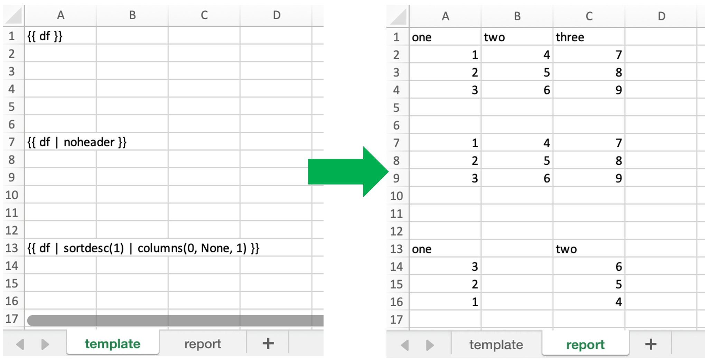
DataFrames Filters¶
noheader¶
Hide the column headers
Example:
{{ df | noheader }}
header¶
Only return the header
Example:
{{ df | header }}
sortasc¶
Sort in ascending order (indices are zero-based)
Example: sort by second, then by first column:
{{ df | sortasc(1, 0) }}
sortdesc¶
Sort in descending order (indices are zero-based)
Example: sort by first, then by second column in descending order:
{{ df | sortdesc(0, 1) }}
columns¶
Select/reorder columns and insert empty columns (indices are zero-based)
See also: colslice
Example: introduce an empty column (None) as the second column and switch the order of the second and third column:
{{ df | columns(0, None, 2, 1) }}
Note
Merged cells: you’ll also have to introduce empty columns if you are using merged cells in your Excel template.
mul, div, sum, sub¶
Apply an arithmetic operation (multiply, divide, sum, subtract) on a column (indices are zero-based)
Syntax:
{{ df | operation(value, col_ix[, fill_value]) }}
fill_value is optional and determines whether empty cells are included in the operation or not. To include empty values and thus make it behave like in Excel, set it to 0.
Example: multiply the first column by 100:
{{ df | mul(100, 0) }}
Example: multiply the first column by 100 and the second column by 2:
{{ df | mul(100, 0) | mul(2, 1) }}
Example: add 100 to the first column including empty cells:
{{ df | add(100, 0, 0) }}
maxrows¶
Maximum number of rows (currently, only sum is supported as aggregation function)
If your DataFrame has 12 rows and you use maxrows(10, "Other") as filter, you’ll get a table that shows the first 9 rows as-is and sums up the remaining 3 rows under the label Other. If your data is unsorted, make sure to call sortasc/sortdesc first to make sure the correct rows are aggregated.
See also: aggsmall, head, tail, rowslice
Syntax:
{{ df | maxrows(number_rows, label[, label_col_ix]) }}
label_col_ix is optional: if left away, it will label the first column of the DataFrame (index is zero-based)
Examples:
{{ df | maxrows(10, "Other") }}
{{ df | sortasc(1)| maxrows(5, "Other") }}
{{ df | maxrows(10, "Other", 1) }}
aggsmall¶
Aggregate rows with values below a certain threshold (currently, only sum is supported as aggregation function)
If the values in the specified row are below the threshold values, they will be summed up in a single row.
See also: maxrows, head, tail, rowslice
Syntax:
{{ df | aggsmall(threshold, threshold_col_ix, label[, label_col_ix][, min_rows]) }}
label_col_ix and min_rows are optional: if label_col_ix is left away, it will label the first column of the DataFrame (indices are zero-based). min_rows has the effect that it skips rows from aggregating if it otherwise the number of rows falls below min_rows. This prevents you from ending up with only one row called “Other” if you only have a few rows that are all below the threshold. NOTE that this parameter only makes sense if the data is sorted!
Examples:
{{ df | aggsmall(0.1, 2, "Other") }}
{{ df | sortasc(1) | aggsmall(0.1, 2, "Other") }}
{{ df | aggsmall(0.5, 1, "Other", 1) }}
{{ df | aggsmall(0.5, 1, "Other", 1, 10) }}
head¶
Only show the top n rows
See also: maxrows, aggsmall, tail, rowslice
Example:
{{ df | head(3) }}
tail¶
Only show the bottom n rows
See also: maxrows, aggsmall, head, rowslice
Example:
{{ df | tail(5) }}
rowslice¶
Slice the rows
See also: maxrows, aggsmall, head, tail
Syntax:
{{ df | rowslice(start_index[, stop_index]) }}
stop_index is optional: if left away, it will stop at the end of the DataFrame
Example: Show rows 2 to 4 (indices are zero-based and interval is half-open, i.e. the start is including and the end is excluding):
{{ df | rowslice(2, 5) }}
Example: Show rows 2 to the end of the DataFrame:
{{ df | rowslice(2) }}
colslice¶
Slice the columns
See also: columns
Syntax:
{{ df | colslice(start_index[, stop_index]) }}
stop_index is optional: if left away, it will stop at the end of the DataFrame
Example: Show columns 2 to 4 (indices are zero-based and interval is half-open, i.e. the start is including and the end is excluding):
{{ df | colslice(2, 5) }}
Example: Show columns 2 to the end of the DataFrame:
{{ df | colslice(2) }}
vmerge¶
Merge cells vertically for adjacent cells with the same value — can be used to represent hierarchies
Note
The vmerge filter does not work in Excel tables, as Excel tables don’t support merged cells!
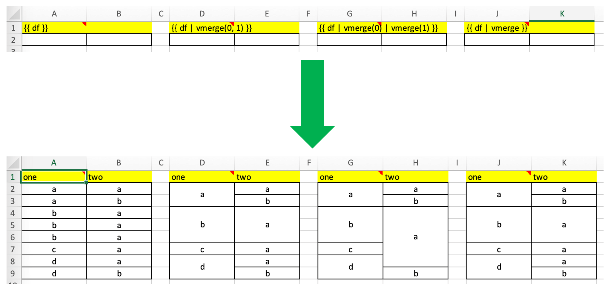
Note that the screenshot uses 4 Frames and the text is centered/vertically aligned in the template.
Syntax (arguments are optional):
{{ df | vmerge(col_index1, col_index2, ...) }}
Example (default): Hierarchical mode across all columns — this is helpful if the number of columns is dynamic. In hierarchical mode, cells are merged vertically in the first column (indices are zero-based) and cells in the next columns are merged only within the merged cells of the previous column:
{{ df | vmerge }}
Example: Hierarchical mode across the specified columns only:
{{ df | vmerge(0, 1) }}
Example: Independent mode: If you want to merge cells within columns independently of each other, use the filter multiple times. This sample merge cells vertically in the first two columns (indices are zero-based):
{{ df | vmerge(0) | vmerge(1) }}
formatter¶
Note
You can’t use formatters with Excel tables.
The formatter filter accepts the name of a function. The function will be called after writing the values to Excel and allows you to easily style the range in a very flexible way:
{{ df | formatter("myformatter") }}
The formatter’s signature is: def myformatter(rng, df) where rng corresponds to the range where the original DataFrame df is written to. Adding type hints (as shown in the example below) will help your editor with auto-completion.
Note
Within the reports framework, formatters need to be decorated with xlwings.reports.formatter (see example below)! This isn’t necessary though when you use them as part of the standard xlwings API.
Let’s run through the Quickstart example again, amended by a formatter.
Example:
from pathlib import Path
import pandas as pd
import xlwings as xw
from xlwings.reports import formatter
# We'll place this file in the same directory as the Excel template
this_dir = Path(__file__).resolve().parent
@formatter
def table(rng: xw.Range, df: pd.DataFrame):
"""This is the formatter function"""
# Header
rng[0, :].color = "#A9D08E"
# Rows
for ix, row in enumerate(rng.rows[1:]):
if ix % 2 == 0:
row.color = "#D0CECE" # Even rows
# Columns
for ix, col in enumerate(df.columns):
if 'two' in col:
rng[1:, ix].number_format = '0.0%'
data = dict(
title='MyTitle',
df=pd.DataFrame(data={'one': [1, 2, 3, 4], 'two': [5, 6, 7, 8]})
)
# Change visible=False to run this in a hidden Excel instance
with xw.App(visible=True) as app:
book = app.render_template(this_dir / 'mytemplate.xlsx',
this_dir / 'myreport.xlsx',
**data)
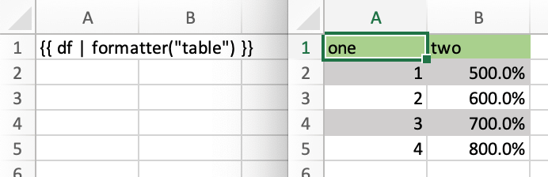
Excel Tables¶
Using Excel tables is the recommended way to format tables as the styling can be applied dynamically across columns and rows. You can also use themes and apply alternating colors to rows/columns. Go to Insert > Table and make sure that you activate My table has headers before clicking on OK. Add the placeholder as usual on the top-left of your Excel table (note that this example makes use of Frames):
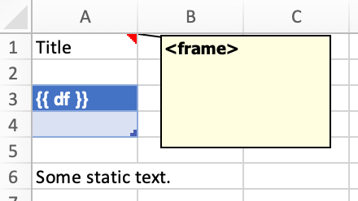
Running the following script:
import pandas as pd
nrows, ncols = 3, 3
df = pd.DataFrame(data=nrows * [ncols * ['test']],
columns=[f'col {i}' for i in range(ncols)])
with xw.App(visible=True) as app:
book = app.render_template('template.xlsx', 'output.xlsx', df=df)
Will produce the following report:
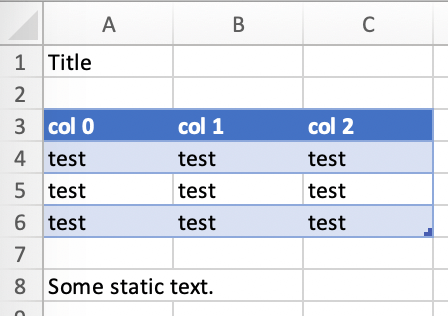
Headers of Excel tables are relatively strict, e.g. you can’t have multi-line headers or merged cells. To get around these limitations, uncheck the Header Row checkbox under Table Design and use the noheader filter (see DataFrame filters). This will allow you to design your own headers outside of the Excel Table.
Note
At the moment, you can only assign pandas DataFrames to tables
Excel Charts¶
To use Excel charts in your reports, follow this process:
Add some sample/dummy data to your Excel template:
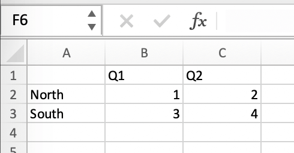
If your data source is dynamic, turn it into an Excel Table (
Insert>Table). Make sure you do this before adding the chart in the next step.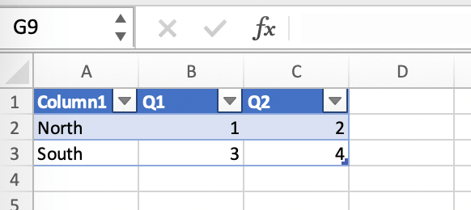
Add your chart and style it:
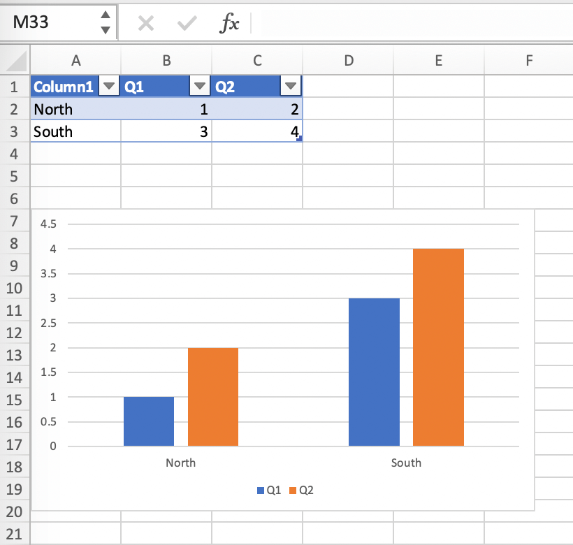
Reduce the Excel table to a 2 x 2 range and add the placeholder in the top-left corner (in our example
{{ chart_data }}) . You can leave in some dummy data or clear the values of the Excel table: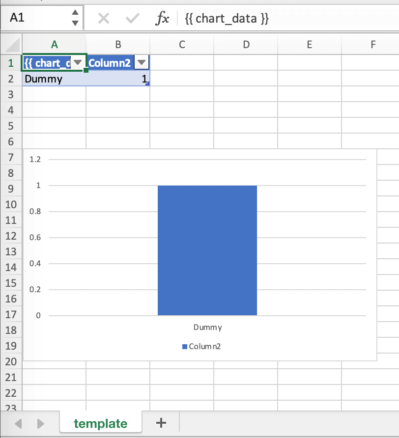
Assuming your file is called
mytemplate.xlsxand your sheettemplatelike on the previous screenshot, you can run the following code:import xlwings as xw import pandas as pd df = pd.DataFrame(data={'Q1': [1000, 2000, 3000], 'Q2': [4000, 5000, 6000], 'Q3': [7000, 8000, 9000]}, index=['North', 'South', 'West']) book = xw.Book("mytemplate.xlsx") sheet = book.sheets['template'].copy(name='report') sheet.render_template(chart_data=df.reset_index())
This will produce the following report, with the chart source correctly adjusted:
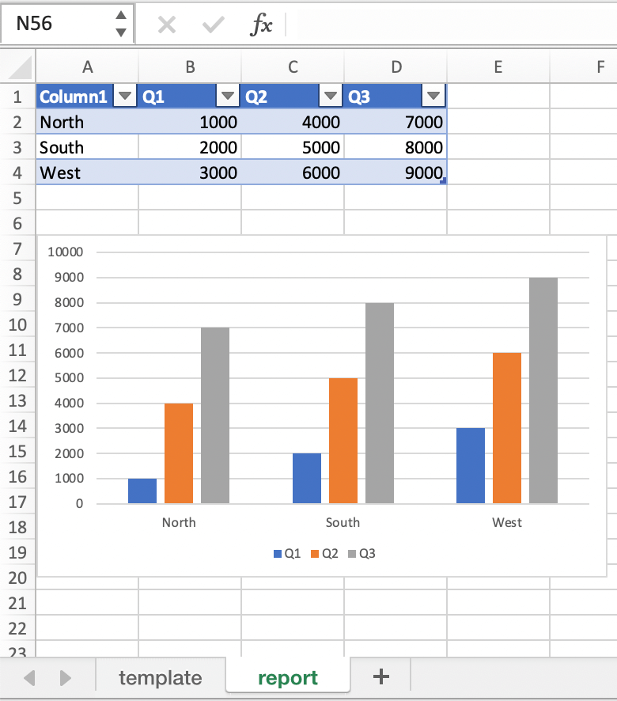
Note
If you don’t want the source data on your report, you can place it on a separate sheet. It’s easiest if you add and design the chart on the separate sheet, before cutting the chart and pasting it on your report template. To prevent the data sheet from being printed when calling to_pdf, you can give it a name that starts with # and it will be ignored. NOTE that if you start your sheet name with ##, it won’t be printed but also not rendered!
Images¶
Images are inserted so that the cell with the placeholder will become the top-left corner of the image. For example, write the following placeholder into you desired cell: {{ logo }}, then run the following code:
import xlwings as xw
from xlwings.reports import Image
book = xw.Book('Book1.xlsx')
sheet = book.sheets['template'].copy(name='report')
sheet.render_template(logo=Image(r'C:\path\to\logo.png'))
Note
Image also accepts a pathlib.Path object instead of a string.
If you want to use vector-based graphics, you can use svg on Windows and pdf on macOS. You can control the appearance of your image by applying filters on your placeholder.
Available filters for Images:
width: Set the width in pixels (height will be scaled proportionally).
Example:
{{ logo | width(200) }}
height: Set the height in pixels (width will be scaled proportionally).
Example:
{{ logo | height(200) }}
width and height: Setting both width and height will distort the proportions of the image!
Example:
{{ logo | height(200) | width(200) }}
scale: Scale your image using a factor (height and width will be scaled proportionally).
Example:
{{ logo | scale(1.2) }}
top: Top margin. Has the effect of moving the image down (positive pixel number) or up (negative pixel number), relative to the top border of the cell. This is very handy to fine-tune the position of graphics object.
See also:
leftExample:
{{ logo | top(5) }}
left: Left margin. Has the effect of moving the image right (positive pixel number) or left (negative pixel number), relative to the left border of the cell. This is very handy to fine-tune the position of graphics object.
See also:
topExample:
{{ logo | left(5) }}
Matplotlib and Plotly Plots¶
For a general introduction on how to handle Matplotlib and Plotly, see also: Matplotlib & Plotly Charts. There, you’ll also find the prerequisites to be able to export Plotly charts as pictures.
Matplotlib¶
Write the following placeholder in the cell where you want to paste the Matplotlib plot: {{ lineplot }}. Then run the following code to get your Matplotlib Figure object:
import matplotlib.pyplot as plt
import xlwings as xw
fig = plt.figure()
plt.plot([1, 2, 3])
book = xw.Book('Book1.xlsx')
sheet = book.sheets['template'].copy(name='report')
sheet.render_template(lineplot=fig)
Plotly¶
Plotly works practically the same:
import plotly.express as px
import xlwings as xw
fig = px.line(x=["a","b","c"], y=[1,3,2], title="A line plot")
book = xw.Book('Book1.xlsx')
sheet = book.sheets['template'].copy(name='report')
sheet.render_template(lineplot=fig)
To change the appearance of the Matplotlib or Plotly plot, you can use the same filters as with images. Additionally, you can use the following filter:
format: allows to change the default image format from
pngto e.g.,vector, which will export the plot as vector graphics (svgon Windows andpdfon macOS). As an example, to make the chart smaller and use the vector format, you would write the following placeholder:{{ lineplot | scale(0.8) | format("vector") }}
Text¶
You can work with placeholders in text that lives in cells or shapes like text boxes. If you have more than just a few words, text boxes usually make more sense as they won’t impact the row height no matter how you style them. Using the same gird formatting across worksheets is key to getting a consistent multi-page report.
Simple Text without Formatting¶
Added in version 0.21.4.
You can use any shapes like rectangles or circles, not just text boxes:
with xw.App(visible=True) as app:
app.render_template('template.xlsx', 'output.xlsx', temperature=12.3)
This code turns this template:
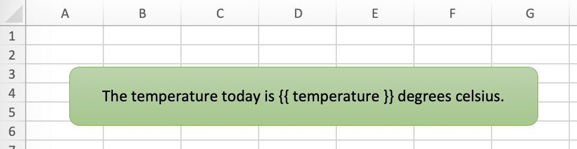
into this report:
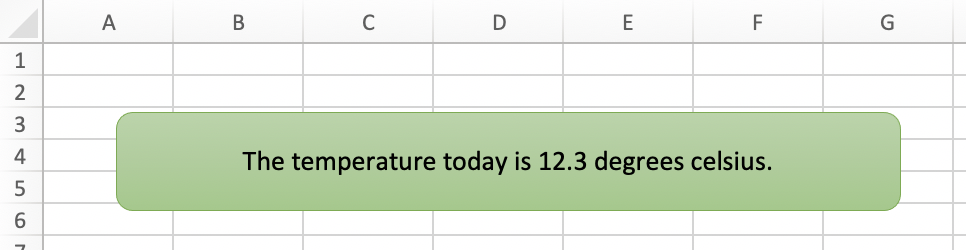
While this works for simple text, you will lose the formatting if you have any. To prevent that, use a Markdown object, as explained in the next section.
If you will be printing on a PDF Layout with a dark background, you may need to change the font color to white. This has the nasty side effect that you won’t see anything on the screen anymore. To solve that issue, use the fontcolor filter:
fontcolor: Change the color of the whole (!) cell or shape. The primary purpose of this filter is to make white fonts visible in Excel. For most other colors, you can just change the color in Excel itself. Note that this filter changes the font of the whole cell or shape and only has an effect if there is just a single placeholder—if you need to manipulate single words, use Markdown instead, see below. Black and white can be used as word, otherwise use a hex notation of your desired color.
Example:
{{ mytitle | fontcolor("white") }} {{ mytitle | fontcolor("#efefef") }}
Markdown Formatting¶
Added in version 0.23.0.
You can format text in cells or shapes via Markdown syntax. Note that you can also use placeholders in the Markdown text that will take the values from the variables you supply via the render_template method:
import xlwings as xw
from xlwings.reports import Markdown
mytext = """\
# Title
Text **bold** and *italic*
* A first bullet
* A second bullet
# {{ second_title }}
This paragraph has a line break.
Another line.
"""
# The first sheet requires a shape as shown on the screenshot
sheet = xw.sheets.active
sheet.render_template(myplaceholder=Markdown(mytext),
second_title='Another Title')
This will render this template with the placeholder in a cell and a shape:
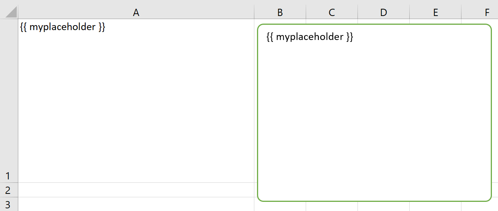
Like this (this uses the default formatting):

For more details about Markdown, especially about how to change the styling, see Markdown Formatting.
Date and Time¶
If a placeholder corresponds to a Python datetime object, by default, Excel will format that cell as a date-formatted cell. This isn’t always desired as the formatting depends on the user’s regional settings. To prevent that, format the cell in the Text format or use a TextBox and use the datetime filter to format the date in the desired format. The datetime filter accepts the strftime syntax—for a good reference, see e.g., strftime.org.
To control the language of month and weekday names, you’ll need to set the locale in your Python code. For example, for German, you would use the following:
import locale
locale.setlocale(locale.LC_ALL, 'de_DE')
Example: The default formatting is December 1, 2020:
{{ mydate | datetime }}
Example: To apply a specific formatting, provide the desired format as filter argument. For example, to get it in the 12/31/20 format:
{{ mydate | datetime("%m/%d/%y") }}
Number Format¶
The format filter allows you to format numbers by using the same mechanism as offered by Python’s f-strings. For example, to format the placeholder performance=0.13 as 13.0%, you would do the following:
{{ performance | format(".1%") }}
This corresponds to the following f-string in Python: f"{performance:0.1%}". To get an introduction to the formatting string syntax, have a look at the Python String Format Cookbook.
Frames: Multi-column Layout¶
Frames are vertical containers in which content is being aligned according to their height. That is, within Frames:
Variables do not overwrite existing cell values as they do without Frames.
Formatting is applied dynamically, depending on the number of rows your object uses in Excel
To use Frames, insert a Note with the text <frame> into row 1 of your Excel template wherever you want a new dynamic column
to start. Frames go from one <frame> to the next <frame> or the right border of the used range.
How Frames behave is best demonstrated with an example: The following screenshot defines two frames. The first one goes from column A to column E and the second one goes from column F to column I, since this is the last column that is used.
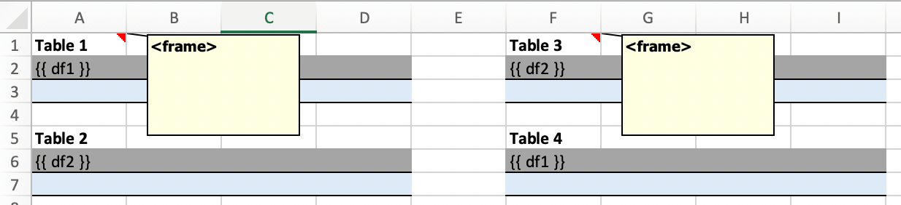
You can define and format DataFrames by formatting
one header and
one data row
If you use the noheader filter for DataFrames, you can leave the header away and format a single data row.
Alternatively, you could also use Excel Tables, as they can make formatting easier.
Running the following code:
import pandas as pd
df1 = pd.DataFrame([[1, 2, 3], [4, 5, 6], [7, 8, 9]])
df2 = pd.DataFrame([[1, 2, 3], [4, 5, 6], [7, 8, 9], [10, 11, 12], [13, 14, 15]])
data = dict(df1=df1.reset_index(), df2=df2.reset_index())
with xw.App(visible=True) as app:
book = app.render_template('my_template.xlsx',
'my_report.xlsx',
**data)
will generate this report:
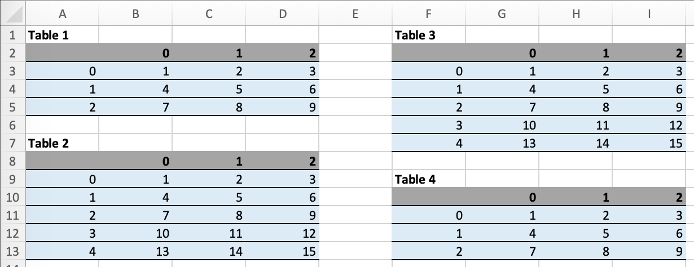
PDF Layout¶
Using the layout parameter in the to_pdf() command, you can “print” your Excel workbook on professionally designed PDFs for pixel-perfect reports in your corporate layout including headers, footers, backgrounds and borderless graphics:
import pandas as pd
df = pd.DataFrame([[1, 2, 3], [4, 5, 6], [7, 8, 9]])
with xw.App(visible=True) as app:
book = app.render_template('template.xlsx',
'report.xlsx',
month_year = 'May 21',
summary_text = '...')
book.to_pdf('report.pdf', layout='monthly_layout.pdf')
Note that the layout PDF either needs to consist of a single page (will be used for each reporting page) or will need to have the same number of pages as the report (each report page will be printed on the corresponding layout page).
To create your layout PDF, you can use any program capable of exporting a file in PDF format such as PowerPoint or Word, but for the best results consider using a professional desktop publishing software such as Adobe InDesign.
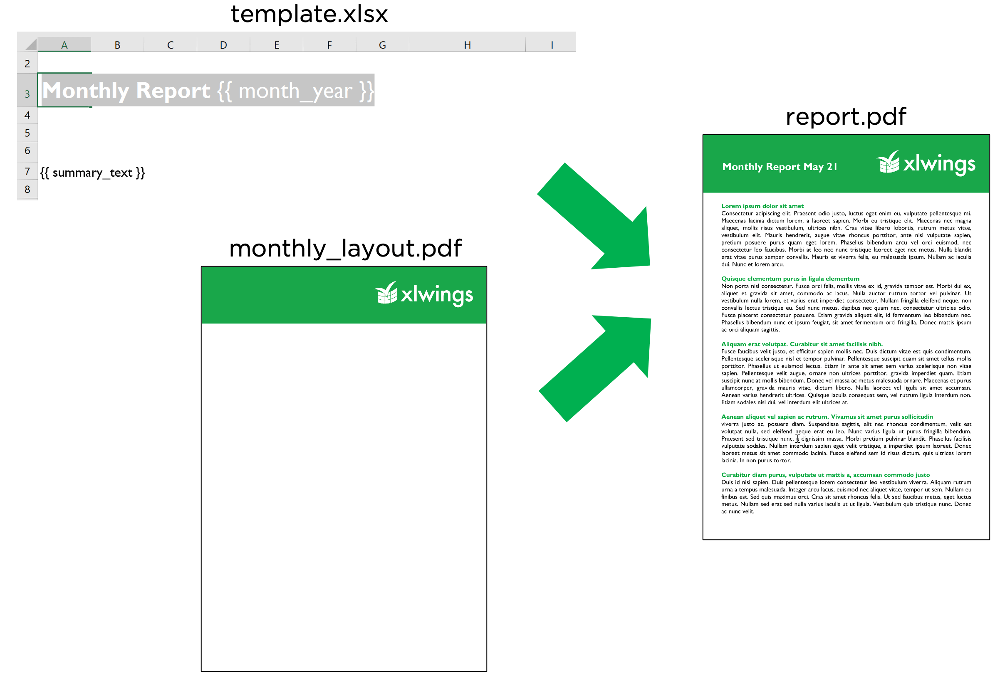